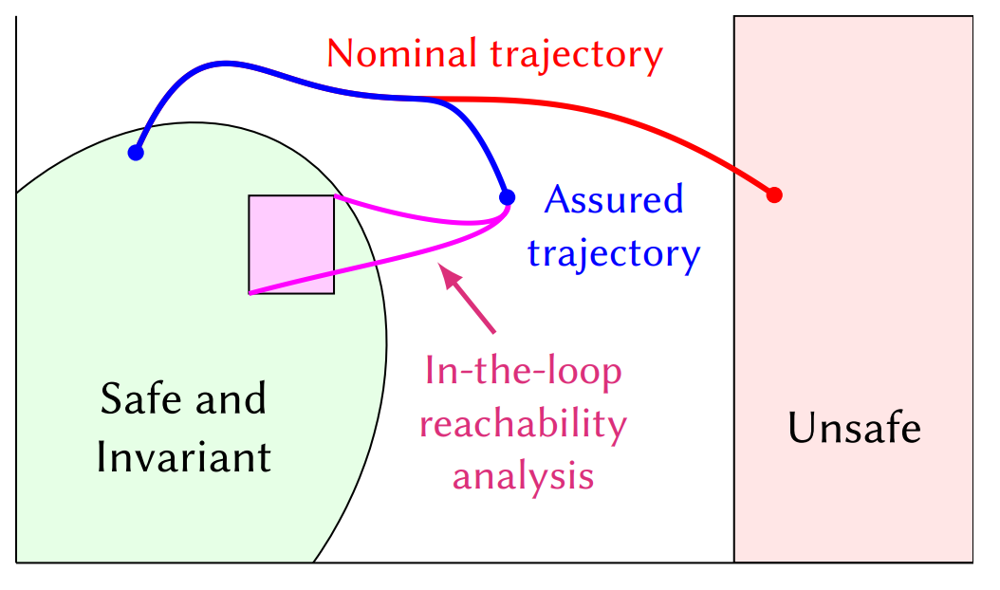
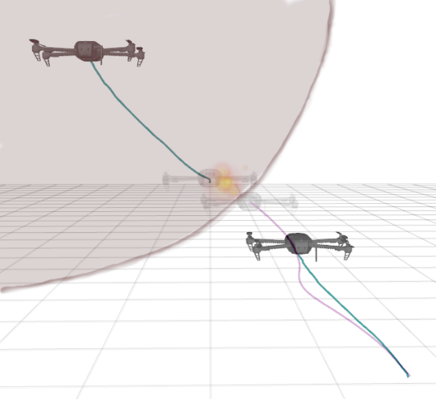

UAV Run-Time Assurance
Collision Avoidance with In-the-Loop Reachability
Implemented a run-time assurance controller that supervises unverified controllers on UAVs to guarantee safety. The RTA uses control barrier functions with fast, in-the-loop reachability analysis based on mixed monotone systems theory to minimally filter unsafe control inputs at each timestep, ensuring collision avoidance while giving the primary controller maximum freedom. The reachability computation runs in under five milliseconds for an eight-dimensional system, enabling real-time operation at 100 Hz on a Jetson TX2. Collision avoidance between two quadrotors was demonstrated in hardware, where an unsafe controller would have caused a collision but the RTA successfully intervened.


